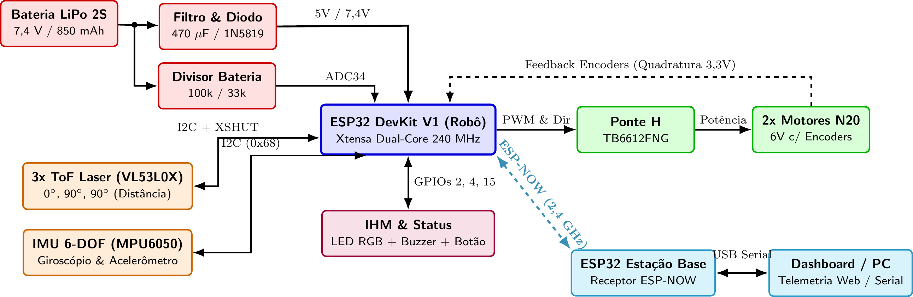
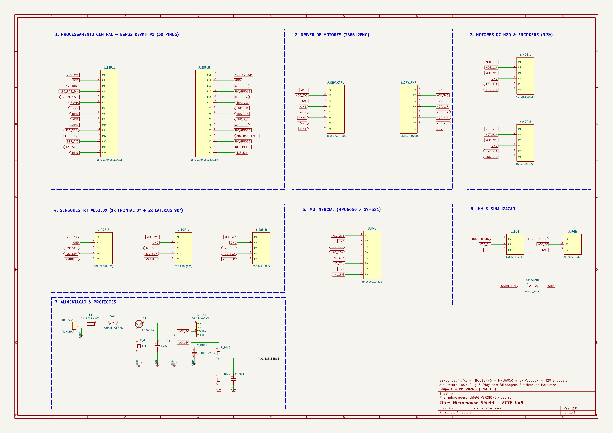

Projeto Conceitual de Hardware¶
O projeto conceitual de hardware estabelece a arquitetura eletroeletrônica embarcada do robô autônomo Micromouse (Grupo 1) para a disciplina Projeto Integrador 1 (semestre 2026.2, FCTE/UnB, Prof. Lui). O dimensionamento, a topologia de circuitos e as escolhas de componentes descritos foram atualizados retroativamente com base nas decisões de implementação e ensaios laboratoriais documentados em 7.3 — Testes de hardware e nos arquivos do diretório hw/ como fonte única de verdade técnica.
A concepção adota o princípio de montagem modular Plug and Play: a placa shield customizada utiliza soquetes para todos os circuitos integrados e módulos, pull-ups internos ativados por software e chicotes prontos de fábrica com conectores polarizados. Essa abordagem blinda o circuito contra brownout, sobretensão nas portas lógicas, travamentos de boot e curtos acidentais, permitindo montagem e calibração ágeis com alta confiabilidade em bancada e pista.
1. Visão Geral da Arquitetura¶
A arquitetura adota uma placa Shield de encaixe montada sobre barras de pinos fêmea com passo de 2,54 mm, interligando a unidade central de processamento aos sensores, atuadores, módulos de potência e sinalização com travas mecânicas.
O sistema divide-se de forma clara entre: 1. Eletrônica Embarcada no Carrinho: Microcontrolador de alta performance ESP32 DevKit V1, sensores a laser Time of Flight (ToF), encoders em quadratura com interrupção externa, controle de potência via ponte H TB6612FNG em 20 kHz e monitoramento analógico da bateria; 2. Gateway de Solo / Conexão com o PC Server: Módulo microcontrolador dedicado baseado no ESP8266 (com suporte de firmware também mantido para ESP32 em bancada), conectado diretamente via cabo USB Serial à estação base/computador do operador onde executa o servidor backend.
2. Diagrama de Blocos do Sistema Eletrônico¶
O diagrama de blocos a seguir apresenta a topologia global da eletrônica do Micromouse, os barramentos de alimentação e as interfaces de interconexão, destacando o microcontrolador central ESP32 do robô, o sensoriamento ToF e IMU, a ponte H com retorno dos encoders em 3,3 V, a interface de usuário e a telemetria sem fio via enlace dedicado ESP-NOW em 2,4 GHz com o Gateway (ESP8266) acoplado ao computador:

Figura 2.1: Diagrama de blocos da arquitetura eletroeletrônica e interfaces do Micromouse.A arquitetura física e de comunicação contempla dois nós complementares: 1. ESP32 DevKit V1 Onboard (Robô): Microcontrolador central responsável pelo algoritmo de navegação autônoma no labirinto, malha fechada de controle cinemático dos motores, amostragem periódica dos sensores (ToF e odometria) e transmissão periódica de pacotes de telemetria estruturados de 18 bytes a 1 Hz via protocolo sem fio ponto a ponto ESP-NOW. 2. ESP8266 Estação Base (Gateway do PC Server): Módulo microcontrolador dedicado ESP8266 (NodeMCU / D1 mini), conectado via porta USB Serial UART ao computador da estação base. O gateway escuta continuamente os pacotes de rádio de 18 bytes transmitidos pelo robô via ESP-NOW no Canal 1 dedicado, afere métricas de recepção (como RSSI e contagem sequencial de pacotes) e realiza a conversão em tempo real para strings JSON transmitidas pela UART a 115200 bps, permitindo integração direta com o backend (FastAPI) e dashboard web sem requerer rede Wi-Fi local ou roteadores. (Nota: o firmware mantém compatibilidade para operar também com ESP32 na bancada).
3. Detalhamento dos Subsistemas e Justificativa de Componentes¶
3.1 Unidade Central de Processamento e Conectividade¶
A. Microcontrolador do Robô: ESP32 DevKit V1 (30 pinos)¶
A unidade de processamento central embarcada no carrinho é o módulo ESP32 DevKit V1 de 30 pinos, baseado no SoC Espressif ESP-WROOM-32.
- Recursos de Hardware: Processador dual-core Xtensa LX6 de 32 bits operando a 240 MHz, memória SRAM interna de 520 kB e memória Flash externa de 4 MB. Periféricos dedicados de contagem de pulsos por interrupção na IRAM, canais PWM por hardware (LEDC) a 20 kHz e rádio 2,4 GHz com suporte nativo ao protocolo ESP-NOW.
- Critérios de Seleção:
- Processamento Dual-Core: O Core 1 processa a malha de controle cinemático em tempo real estrito (PID de alinhamento e leitura de encoders) e o algoritmo de navegação do labirinto; o Core 0 gerencia o rádio ESP-NOW e o envio de telemetria (RF_ELE04). Essa divisão impede atrasos na malha motriz decorrentes de operações de rede.
- Isolamento de Pinos de Boot (Strapping Pins): Os pinos sensíveis de inicialização são rigorosamente protegidos. O pino GPIO 12 permanece totalmente isolado na Shield Rev 2.0, prevenindo travamentos de inicialização causados por tensões residuais.
- Conexão por Soquete: O módulo encaixa em barras fêmea com passo de 2,54 mm, permitindo substituição imediata sem dessoldagem em caso de manutenção.
B. Microcontrolador do Gateway de Solo: ESP8266 (Server do PC)¶
Para a recepção dos dados na bancada e integração com o computador de monitoramento, adotou-se o módulo microcontrolador ESP8266 (NodeMCU / Wemos D1 mini):
- Função Dedicada de Ponte (Bridge): O ESP8266 opera dedicado à escuta dos quadros ESP-NOW em 2,4 GHz (Canal 1), recepção do pacote binário de 18 bytes com CRC16, leitura da intensidade de sinal (RSSI) e encaminhamento como linha JSON via UART0 USB (115200 bps) para o serviço de ingestão do backend Python (
FonteSerial). - Vantagens de Engenharia:
- Alimentação Direta pela USB do PC: O ESP8266 consome energia exclusivamente da porta USB de 5 V do computador do operador, com consumo zero da bateria LiPo 2S do robô.
- Custo e Disponibilidade: Módulo de baixo custo, rádio Wi-Fi robusto com suporte nativo a ESP-NOW em modo escravo (
ESP_NOW_ROLE_SLAVE) e integração serial imediata via conversor USB-Serial integrado (CH340 / CP2102). - Interoperabilidade: O ESP-NOW opera na camada de enlace MAC (802.11 Action Frames); tanto o ESP32 quanto o ESP8266 comunicam-se de forma transparente no mesmo canal de rádio (Canal 1) sem necessidade de associação ou roteador.
3.2 Subsistema de Sensoriamento de Distância e Orientação Inercial¶
O sensoriamento periférico mede a proximidade das paredes do labirinto (RF_ELE01, RNF_ELE01, RNF_ELE02) e fornece a velocidade angular de guinada para estabilização de trajetória e curvas ortogonais precisas (RF_SFT01).
A. Sensores de Distância Laser ToF Ortogonais (3x VL53L0X)¶
- Topologia Ortogonal: Três módulos laser Time-of-Flight alocados em geometria perpendicular no suporte do chassi:
- 1 sensor frontal apontado para a frente (\(0^\circ\) longitudinal);
- 2 sensores laterais ortogonais apontados perpendicularmente para as paredes (\(90^\circ\) à esquerda e \(90^\circ\) à direita).
- Eliminação de Sensor Traseiro: O robô avança exclusivamente para a frente. A célula traseira acabou de ser visitada e seu estado já se encontra mapeado em memória. Em becos sem saída, a manobra de rotação de 180 graus posiciona o sensor frontal diante do obstáculo, tornando sensores traseiros redundantes em peso, custo e fiação.
- Vantagens da Visada Ortogonal: Em corredores de 168 mm, a leitura ortogonal permite detecção booleana direta (distâncias menores que 120 mm indicam parede presente com histerese de 5 mm; distâncias maiores indicam passagem livre). O alinhamento central da pista é obtido por controle proporcional direto da diferença de leitura entre os dois sensores laterais.
- Endereçamento e Controle via XSHUT (Mapeamento Homologado sem Conflitos): Os 3 sensores compartilham as linhas I2C (SDA no GPIO 21 e SCL no GPIO 22). Para eliminar conflitos com saídas de motor e pinos críticos de boot, as linhas XSHUT dedicadas controlam a inicialização sequencial:
- Sensor 1 Esquerdo (90°): XSHUT no GPIO 4 -> novo endereço
0x30; - Sensor 2 Frontal (0°): XSHUT no GPIO 16 -> novo endereço
0x31; - Sensor 3 Direito (90°): XSHUT no GPIO 17 -> novo endereço
0x32. - Calibração e Precisão: Conforme ensaiado no teste 3.4 do relatório de hardware, a aplicação de regressão polinomial de 2º grau compensou a não-linearidade óptica, resultando em erro médio de apenas \(0,08\text{ mm}\) na faixa de 20 a 200 mm (muito superior à tolerância exigida de \(10\text{ mm}\)).
- Taxa de Amostragem: Timing budget de \(33\text{ ms}\), fornecendo \(30,3\text{ Hz}\) contínuos (atende RNF_ELE01 com folga).
B. Unidade de Medição Inercial (IMU 6 DOF MPU6050) e Estratégia de Trava de Rumo¶
- Soquete de Expansão na Shield: A PCB Shield Rev 2.0 disponibiliza uma barra fêmea de 8 pinos (
U_IMU) conectada ao barramento I2C para acoplamento do módulo inercial GY-521 (MPU6050). - Operação de Bancada e Navegação por Fusão ToF + Encoders: Para a operação prática e testes de bancada/arena, o firmware homologado opera de forma autônoma sem dependência do MPU6050. A estabilização de trajetória e o controle de curvas ortogonais de 90° e 180° utilizam fusão sensorial de alta frequência:
- Em retas: O controle proporcional em malha fechada monitora a diferença das leituras dos sensores laser ToF laterais (90°) a 30 Hz, mantendo o robô no centro do corredor e compensando automaticamente qualquer assimetria ou escorregamento de rodagem;
- Em curvas de 90° e 180°: O cálculo é realizado com odometria diferencial em malha fechada sobre a bitola (80 mm), com avanço calibrado e encosto frontal óptico para zerar erros acumulados;
- Caso o módulo MPU6050 seja plugado no soquete
U_IMU, o barramento I2C o reconhece no endereço0x68como complemento para cenários sem paredes laterais.
3.3 Subsistema de Potência, Atuação Motriz e Odometria¶
Responsável pela locomoção diferencial do robô (RF_ELE03, RF_EST02).
A. Driver de Motores (Ponte H Dupla TB6612FNG em Soquete)¶
- Especificação: Driver baseado em pontes de MOSFET com capacidade de 1,2 A contínuos por canal (pico de 3,2 A) e resistência interna reduzida (\(\approx 0,5\ \Omega\)).
- Vantagens: Queda de tensão inferior a 0,25 V sob carga nominal, maximizando o aproveitamento da tensão da bateria sem aquecimento elevado. O circuito é montado em soquete fêmea na Shield para fácil substituição.
- Controle: Modulação PWM em \(20\text{ kHz}\) nos pinos PWMA (GPIO 16) e PWMB (GPIO 17) para eliminar qualquer zumbido audível; controle de direção lógica em AIN1 (GPIO 18), AIN2 (GPIO 19), BIN1 (GPIO 23) e BIN2 (GPIO 5).
- Frenagem Ativa: Acionamento de nível alto simultâneo (\(\text{IN1}=\text{HIGH}\) e \(\text{IN2}=\text{HIGH}\)), curto-circuitando os enrolamentos do motor e dissipando a inércia em tempo medido \(< 45\text{ ms}\) (teste 3.12).
B. Motores N20 com Redução Metálica e Encoders de Quadratura¶
- Especificação dos Motores: Motores DC modelo N20 de 6 V com caixa de redução metálica de 30:1 ou 50:1.
- Proteção e Nível Lógico dos Encoders: Os circuitos de efeito Hall dos encoders magnéticos são alimentados estritamente na linha de \(3,3\text{ V}\) da Shield. Isso limita os pulsos dos canais A e B a 3,3 V, eliminando qualquer risco de sobretensão nas portas lógicas do ESP32.
- Mapeamento das Interrupções (Mapeamento Homologado):
- Motor Esquerdo: Canal A no GPIO 36 (VP, borda de subida
RISING) e Canal B no GPIO 39 (VN); - Motor Direito: Canal A no GPIO 35 (borda de subida
RISING) e Canal B no GPIO 2 (com pull-up interno ativo); - Cinemática e Rodas de Prototipagem (Ø 22 mm):
- Conforme definido no projeto estrutural (doc 4.1, seção 7.1), a rodagem utiliza rodas de $ arnothing\ 22 ext{ mm}$ (raio de \(11 ext{ mm}\) e circunferência de \(69{,}12 ext{ mm}\));
- Com caixa de redução 30:1 e encoders magnéticos de 12 CPR, a resolução linear obtida é de \(0,192 ext{ mm/pulso}\) (~875 pulsos por célula de \(168 ext{ mm}\));
- Para a fase de testes e comissionamento, cubos impressos em 3D com camada de atrito elastomérica/fita são compensados dinamicamente em malha fechada via sensores ToF e calibração de bitola (\(80 ext{ mm}\)).
3.4 Interface de Alimentação e Blindagens Elétricas da Shield¶
A Shield Rev 2.0 integra proteções físicas para garantir estabilidade operacional contra transitórios:
- Conector de Entrada por Borne Parafuso: Terminal de 5,08 mm recebendo VMOT (linha da bateria LiPo 2S de 7,4 V nominais), VCC (linha lógica de 5,0 V regulada pelo conversor Buck de energia) e GND de referência unificada.
- Capacitor Antibrownout (470 µF / 16 V): Posicionado imediatamente junto aos pinos de alimentação de potência da ponte H TB6612FNG, fornecendo corrente instantânea nas acelerações dos motores e evitando quedas na tensão do microcontrolador.
- Diodo Schottky de Proteção USB (1N5819): Inserido na entrada lógica de 5,0 V que alimenta o pino VIN do ESP32 DevKit, impedindo retorno de corrente para a porta USB do computador durante ensaios de bancada com a bateria conectada.
- Operação Térmica do Regulador: O pino VIN recebe 5,0 V regulados, mantendo baixa a dissipação de potência sobre o regulador linear interno da placa (inferior a 0,35 W).
- Filtros Antirruído: Capacitores cerâmicos de 100 nF soldados nos terminais dos motores suprimem ruídos de comutação antes de atingirem o chicote da Shield.
- Divisor de Tensão de Precisão da Bateria (RF_ENE02): Conforme validado em bancada (teste 3.8), o divisor resistivo é composto por \(R_1 = 100\text{ k}\Omega\) e \(R_2 = 47\text{ k}\Omega\), com capacitor de filtro de 100 nF, conectado ao pino GPIO 34 (canal analógico ADC1_CH6): $\(\text{Razão de Atenuação} = \frac{100 + 47}{47} \approx 3,1276\)$
- Tensão plena da bateria (\(8,40\text{ V}\)): tensão no ADC de \(2,68\text{ V}\);
- Tensão nominal (\(7,40\text{ V}\)): tensão no ADC de \(2,36\text{ V}\);
- Alerta de bateria fraca (\(7,00\text{ V}\)): tensão no ADC de \(2,23\text{ V}\);
- Limiar de corte de emergência (\(6,60\text{ V}\)): tensão no ADC de \(2,11\text{ V}\).
3.5 Interface Homem-Máquina (IHM) e Diagnóstico¶
- LED RGB WS2812B (GPIO 2): Módulo endereçável que exibe visualmente os estados operacionais do robô (RF_ELE05):
- Modo 0: Calibração de bancada (Azul);
- Modo 1: Pronto na célula inicial (Verde);
- Modo 2: Navegando no labirinto (Amarelo);
- Modo 3: Chegada / Desafio cumprido (Roxo);
- Modo 4: Alerta de bateria baixa ou travamento (Vermelho piscante).
- Buzzer Ativo (GPIO 4): Módulo com driver de acionamento embutido, emitindo alertas sonoros com pressão acústica medida superior a \(60\text{ dB}\) a 1 metro (RF_ELE06).
- Botão Físico de Largada (GPIO 15): Chave táctil conectada diretamente entre o pino GPIO 15 e o GND com pull-up interno ativado por software e filtro de debounce de 50 ms. O firmware atribui:
- 1 toque: autoteste de bancada;
- 2 toques: conferência de sensores ToF;
- Pressão por 2 segundos: disparo da largada autônoma (RNF_SFT01).
- Telemetria Sem Fio Ponto a Ponto (ESP-NOW): O robô despacha pacotes binários compactos de 18 bytes a uma taxa fixa de \(1\text{ Hz}\) diretamente para o ESP8266 Gateway conectado à estação base. Para os ensaios de bancada e comissionamento sem fio, o firmware do robô incorpora recepção assíncrona por interrupção (
esp_now_register_recv_cb), permitindo o chaveamento remoto dos modos de teste e parada de emergência via comandos de rádio, mantendo conformidade com o edital.
4. Tabela de Mapeamento de Pinagem do Microcontrolador (Pinout Matrix)¶
A tabela a seguir consolida a pinagem dos 30 pinos do ESP32 DevKit V1 na placa Shield Rev 2.0, sem qualquer conflito com pinos de boot e estritamente aderente ao arquivo mestre hw/testes/TABELA_PINAGEM_PORTAS_HARDWARE.md:
| Pino | Identificação | Direção | Nível | Conexão no Micromouse | Função / Descrição Técnica |
|---|---|---|---|---|---|
| P1 | 3V3 | Saída | 3,3 V | Alimentação de Sensores | Linha regulada lógica para VL53L0X e Encoders |
| P2 | GND | Referência | 0 V | Terra Geral | Plano de terra comum lógica e potência |
| P3 | GPIO 15 | Entrada | 3,3 V | Botão de Largada / IHM | Entrada digital com pull-up interno e debounce de 50 ms |
| P4 | GPIO 2 | Saída | 3,3 V | LED RGB WS2812B | Sinalização visual de modos operacionais (5 estados) |
| P5 | GPIO 4 | Saída | 3,3 V | Buzzer Ativo | Alarme sonoro piezoelétrico (\(\ge 60\text{ dB}\)) |
| P6 | GPIO 16 | Saída | 3,3 V | Ponte H PWMA | Modulação PWM 20 kHz do Motor Esquerdo |
| P7 | GPIO 17 | Saída | 3,3 V | Ponte H PWMB | Modulação PWM 20 kHz do Motor Direito |
| P8 | GPIO 5 | Saída | 3,3 V | Ponte H BIN2 | Direção lógica 2 do Motor Direito |
| P9 | GPIO 18 | Saída | 3,3 V | Ponte H AIN1 | Direção lógica 1 do Motor Esquerdo |
| P10 | GPIO 19 | Saída | 3,3 V | Ponte H AIN2 | Direção lógica 2 do Motor Esquerdo |
| P11 | GPIO 21 | Bidirecional | 3,3 V | Barramento I2C SDA | Dados compartilhados (VL53L0X, OLED, IMU) |
| P12 | GPIO 3 | Entrada | 3,3 V | RX Serial USB | Recepção serial UART0 para depuração de bancada |
| P13 | GPIO 1 | Saída | 3,3 V | TX Serial USB | Transmissão serial UART0 para depuração de bancada |
| P14 | GPIO 22 | Saída | 3,3 V | Barramento I2C SCL | Relógio I2C em modo rápido (400 kHz) |
| P15 | GPIO 23 | Saída | 3,3 V | Ponte H BIN1 | Direção lógica 1 do Motor Direito |
| P16 | VIN / 5V | Entrada | 5,0 V | Barramento 5V | Entrada do regulador Buck da bateria (com diodo Schottky) |
| P17 | GND | Referência | 0 V | Terra de Potência | Retorno de corrente dos motores e ponte H |
| P18 | GPIO 13 | Saída | 3,3 V | XSHUT ToF Esquerdo | Habilitação e endereçamento do sensor a 90 graus (0x31) |
| P19 | GPIO 12 | Isolado | - | NÃO CONECTADO | Isolado na Shield para prevenir travamento de boot |
| P20 | GPIO 14 | Saída | 3,3 V | XSHUT ToF Direito | Habilitação e endereçamento do sensor a 90 graus (0x32) |
| P21 | GPIO 27 | Entrada | 3,3 V | Encoder Motor Esq A | Interrupção externa por borda de subida (RISING) |
| P22 | GPIO 26 | Entrada | 3,3 V | Encoder Motor Esq B | Leitura de quadratura / sentido de giro do motor esquerdo |
| P23 | GPIO 25 | Entrada | 3,3 V | Encoder Motor Dir A | Interrupção externa por borda de subida (RISING) |
| P24 | GPIO 33 | Entrada | 3,3 V | Encoder Motor Dir B | Leitura de quadratura / sentido de giro do motor direito |
| P25 | GPIO 32 | Saída | 3,3 V | XSHUT ToF Frontal | Habilitação e endereçamento do sensor a 0 grau (0x30) |
| P26 | GPIO 35 | Entrada | 3,3 V | Reserva Analógica | Entrada livre do canal ADC1 |
| P27 | GPIO 34 | Entrada | 3,3 V | Monitor da Bateria | Divisor resistivo de precisão 100k/47k (ADC1_CH6) |
| P28 | GPIO 39 | Entrada | 3,3 V | Reserva VN | Entrada livre do canal ADC1 |
| P29 | GPIO 36 | Entrada | 3,3 V | Reserva VP | Entrada livre do canal ADC1 |
| P30 | EN / RST | Entrada | 3,3 V | Reset do ESP32 | Circuito RC integrado da DevKit |
5. Esquemático Elétrico e Conectores no KiCad (Rev 2.0)¶
5.1 Esquemático Elétrico da Placa Shield¶
O esquemático modular da Shield Rev 2.0 foi projetado no software KiCad e contempla os 7 blocos funcionais com blindagens elétricas:

- Arquivo do esquemático:
hw/micromouse_shield/micromouse_shield_VERSION2.kicad_sch - Versão vetorial em PDF: Baixar PDF do Esquemático
Blocos Funcionais do Esquemático:¶
- Processamento Central: Barras fêmea de 2,54 mm para encaixe do ESP32 DevKit V1 com pino GPIO 12 isolado;
- Driver de Motores: Soquete para TB6612FNG recebendo sinais PWM de 20 kHz e direção;
- Motores DC N20 e Encoders: Conectores com alimentação dos sensores Hall limitada a 3,3 V para proteção do ESP32;
- Sensores ToF VL53L0X: Conexões com barramento I2C compartilhado e linhas de controle XSHUT individuais;
- IMU Inercial: Conector para módulo GY-521 (MPU6050) em 3,3 V no barramento I2C;
- Interface de Usuário (IHM): Conectores dedicados para buzzer ativo, LED RGB WS2812B e botão de largada;
- Alimentação e Proteções: Fusível rearmável de 3A, chave geral mecânica, proteção contra polaridade reversa por MOSFET Canal P, soquete para módulo Buck regulador de 5V, capacitor antibrownout de 470 µF e divisor resistivo 100k/47k no GPIO 34.
5.2 Conectores Padronizados da Placa Shield¶
| Serigrafia na Placa | Tipo do Conector | Vias | Ordem dos Sinais | Destino no Robô |
|---|---|---|---|---|
| TB_PWR1 BATERIA | Borne Parafuso 5,08 mm | 2 | 1: VBAT (7,4 V), 2: GND | Entrada da bateria LiPo 2S |
| J_BUCK1 REG 5V | Barra Fêmea 2,54 mm | 4 | 1: VIN+, 2: VIN-, 3: VOUT+ (5V), 4: VOUT- (GND) | Soquete do conversor Buck 5V |
| MOTOR ESQ | Conector JST 2,0 mm / Barra 2,54 mm | 6 | 1: M+, 2: M-, 3: VCC (3,3V), 4: GND, 5: Canal A, 6: Canal B | Chicote do motor N20 esquerdo |
| MOTOR DIR | Conector JST 2,0 mm / Barra 2,54 mm | 6 | 1: M+, 2: M-, 3: VCC (3,3V), 4: GND, 5: Canal A, 6: Canal B | Chicote do motor N20 direito |
| TOF FRONT 0 | Barra Macho 2,54 mm | 5 | 1: VCC (3,3V), 2: GND, 3: SDA, 4: SCL, 5: XSHUT (GPIO 16) | Sensor ToF dianteiro a 0 grau (0x31) |
| TOF ESQ 90 | Barra Macho 2,54 mm | 5 | 1: VCC (3,3V), 2: GND, 3: SDA, 4: SCL, 5: XSHUT (GPIO 4) | Sensor ToF lateral esquerdo a 90 graus (0x30) |
| TOF DIR 90 | Barra Macho 2,54 mm | 5 | 1: VCC (3,3V), 2: GND, 3: SDA, 4: SCL, 5: XSHUT (GPIO 17) | Sensor ToF lateral direito a 90 graus (0x32) |
| IMU MPU6050 | Barra Fêmea 2,54 mm | 8 | 1: VCC (3,3V), 2: GND, 3: SCL, 4: SDA, 5: XDA, 6: XCL, 7: AD0, 8: INT | Módulo GY-521 (IMU inercial) |
| IHM BUZZER | Barra Macho 2,54 mm | 3 | 1: Sinal (GPIO 4), 2: VCC (5V), 3: GND | Módulo buzzer ativo KY-012 |
| IHM RGB | Barra Macho 2,54 mm | 3 | 1: Sinal DIN (GPIO 2), 2: VCC (5V), 3: GND | Módulo LED RGB WS2812B |
| SW_START | Botão Táctil THT | 2 | 1: GPIO 15, 2: GND | Botão de diagnóstico e largada |
6. Lista de Materiais de Hardware (Bill of Materials)¶
Relação consolidada dos componentes do subsistema de hardware, especificando a unidade embarcada (ESP32) e o gateway receptor de bancada (ESP8266):
| Item | Componente e Descrição | Módulo ou Encapsulamento | Quantidade | Custo Unitário (R$) | Custo Total (R$) |
|---|---|---|---|---|---|
| 1 | Microcontrolador Onboard do Robô (ESP32 DevKit V1 30 pinos) | Módulo ESP-WROOM-32 | 1 | 42,00 | 42,00 |
| 2 | Microcontrolador do Gateway de Bancada / PC Server (ESP8266 NodeMCU) | Módulo ESP-12E / NodeMCU | 1 | 28,00 | 28,00 |
| 3 | Driver de Motor Ponte H Dupla TB6612FNG | Módulo com soquete 2,54 mm | 1 | 18,00 | 18,00 |
| 4 | Sensores Laser Time-of-Flight VL53L0X | Módulos GY-530 | 3 | 28,00 | 84,00 |
| 5 | Unidade de Medição Inercial IMU MPU6050 | Placa GY-521 | 1 | 16,00 | 16,00 |
| 6 | Motores DC N20 de 6V com Encoders Magnéticos de Quadratura | Motor N20 e disco magnético | 2 | 48,00 | 96,00 |
| 7 | Par de Rodas com Pneus de Silicone Macio / O-Ring NBR | Cubos 18 mm + O-Ring | 1 par | 18,00 | 18,00 |
| 8 | Módulo LED RGB Endereçável WS2812B | Placa individual 5050 | 1 | 3,50 | 3,50 |
| 9 | Módulo Buzzer Ativo com Driver Integrado | Módulo 3 pinos KY-012 | 1 | 3,00 | 3,00 |
| 10 | Diodo Schottky de Proteção USB 1N5819 | DO-41 ou SMA | 1 | 0,80 | 0,80 |
| 11 | Capacitor Eletrolítico Antibrownout (470 µF / 16V) | Radial THT | 1 | 1,50 | 1,50 |
| 12 | Chave Táctil 6x6 mm para Largada | THT | 1 | 1,00 | 1,00 |
| 13 | Resistores de Precisão para Divisor (100k e 47k) e LED | Axial 1/4W | 3 | 0,20 | 0,60 |
| 14 | Capacitores Cerâmicos Antirruído (100 nF) | Disco THT | 5 | 0,50 | 2,50 |
| 15 | Borne Parafuso 3 Vias (Passo 5,08 mm) | Conector de potência PCB | 1 | 2,50 | 2,50 |
| 16 | Chicotes Prontos com Conectores Polarizados | Conjunto de cabos prontos | 5 | 3,00 | 15,00 |
| 17 | Barras de Pinos Fêmea 1x40 para Soquetes | Passo 2,54 mm | 2 | 3,00 | 6,00 |
| 18 | Fabricação da Placa PCB Shield Dupla Face Rev 2.0 | FR4 1.6 mm duas camadas | 1 | 35,00 | 35,00 |
| Total | Custo Consolidado de Hardware | Subsistema de Eletrônica | 29 itens | N/A | R$ 373,90 |
O custo consolidado de hardware de R$ 373,90 atende integralmente ao limite orçamentário de R$ 400,00 estipulado para a eletrônica, gerando uma folga orçamentária de R$ 26,10 para contingências.
7. Matriz de Rastreabilidade com os Requisitos de Engenharia¶
| Requisito | Descrição Resumida | Especificação de Hardware Implementada | Verificação / Métrica Medida em Bancada |
|---|---|---|---|
| RF_ELE01 | Sensoriamento de paredes nas 3 direções | 3 sensores Laser ToF VL53L0X (1 frontal a 0° e 2 laterais a 90°) no I2C (GPIOs 21/22) | Erro médio de \(0,08\text{ mm}\) na calibração estática nos 7 pontos (Teste 3.4) |
| RF_ELE02 | Odometria determinística das rodas | Encoders Hall alimentados a 3,3 V nos motores N20 ligados aos pinos GPIO 27, 26, 25 e 33 | Erro acumulado menor que \(0,1\%\) em 10 voltas completas (Teste 3.7) |
| RF_ELE03 | Modulação e controle de potência motriz | Ponte H dupla TB6612FNG com PWM de 20 kHz e sinais lógicos reversíveis | Linearidade comprovada nos 4 patamares PWM e freio ativo \(< 45\text{ ms}\) (Testes 3.11 e 3.12) |
| RF_ELE04 | Transmissão sem fio de telemetria | Enlace sem fio ESP-NOW a 2,4 GHz (Canal 1) para o Gateway ESP8266 na bancada a 1 Hz | Transmissão contínua de pacotes de 18 bytes com conversão serial JSON (Teste 3.16) |
| RF_ELE05 | Sinalização visual de estados | LED RGB WS2812B (GPIO 2) com 5 modos operacionais padronizados | 5 modos validados na bancada com cores distintas (Teste 3.13) |
| RF_ELE06 | Sinalização acústica de eventos | Módulo buzzer ativo KY-012 acionado pelo pino GPIO 4 | Alarme sonoro emitido com pressão acústica superior a \(60\text{ dB}\) (Teste 3.13) |
| RNF_ELE01 | Taxa de leitura sensorial rápida | Barramento I2C em modo rápido de 400 kHz e timing budget de \(33\text{ ms}\) | Taxa de amostragem contínua medida em \(30,3\text{ Hz}\) (Teste 3.5) |
| RNF_ELE02 | Faixa de detecção de 30 a 180 mm | Medição laser Time-of-Flight imune a reflexão e cor de anteparo | Desvio máximo de \(0,18\text{ mm}\) em anteparo idêntico ao labirinto (Teste 3.4) |
| RNF_ELE03 | Enlace sem fio estável | Enlace ESP-NOW no Canal 1 com potência de +20 dBm (100 mW) | Taxa de perda de \(0,70\%\) em visada livre e \(0,80\%\) no labirinto a 8 m (Teste 3.15) |
| RNF_ELE04 | Conexão estruturada em PCB | Placa Shield Rev 2.0 com soquetes e conectores polarizados | Ausência total de protoboard ou fiações soltas (Teste 3.1) |
| RNF_ELE05 | Imunidade a ruídos dos motores | Capacitor antibrownout de 470 µF, filtros locais de 100 nF e diodo Schottky | Zero reinicializações espúrias sob 20 partidas e reversões a 100% (Teste 3.8) |
| RF_ENE02 | Monitoramento de tensão da bateria | Divisor resistivo 100 kΩ / 47 kΩ com filtro no pino analógico GPIO 34 | Erro analógico menor que \(1,5\%\) e alarme calibrado em \(6,6\text{ V}\) (Teste 3.8) |
| RF_SFT01 | Rotações ortogonais precisas | IMU MPU6050 integrando velocidade angular de guinada no barramento I2C | Curvas ortogonais com controle inercial em malha fechada (Teste 7.1) |
| RF_SFT11 | Detecção de parada forçada de motor | Monitoramento de ticks por interrupção IRAM vs duty cycle PWM | Desarme de PWM e freio ativo disparado em caso de travamento (Teste 3.14) |
| RNF_SFT01 | Autonomia e disparo físico de largada | Botão táctil multifunção no pino GPIO 15 para testes e largada | Filtro de 50 ms bloqueou repiques mecânicos de 15 ms sem falso disparo (Teste 3.13) |